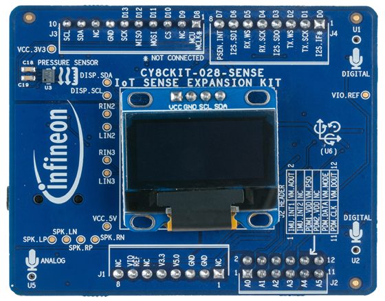

|
Shield Library (CY8CKIT-028-SENSE)
|
|
Shield Library (CY8CKIT-028-SENSE)
|
The Sense Shield Board (CY8CKIT-028-SENSE) has been designed as a companion to add common sensors, audio components and user interface to an Arduino based baseboard.
This kit targets two main applications:
The shield library provides support for:
This library makes use of support libraries: display-oled-ssd1306, sensor-orientation-bmx160, sensor-xensiv-dps3xx, and audio-codec-wm8960. These can be seen in the libs directory and can be used directly instead of through the shield if desired.
The Sense Shield Board uses the Arduino Uno pin layout plus an additional 6 pins. It is compatible with the PSoC™ 4 and PSoC™ 6 Pioneer Kits. Refer to the respective kit guides for more details.

The OLED library can be also used standalone. Follow the steps below to create a simple application which shows an interesting pattern on the display.
© Cypress Semiconductor Corporation (an Infineon company) or an affiliate of Cypress Semiconductor Corporation, 2024.